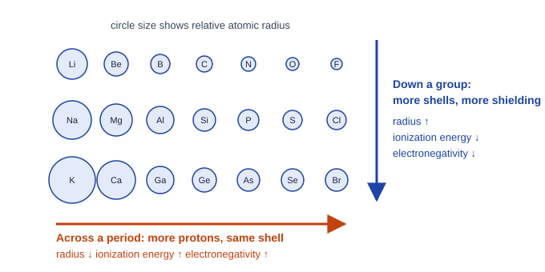

Periodic Trends
Periodic trends follow from Coulomb's law and shielding.
Part 1 · Hook
Why this matters
Part 2 · Before you start
What this builds on
Part 3 · Prerequisite check
Quick check before you start
1. How many valence electrons does chlorine, [Ne] 3s² 3p⁵, have?
- 7
- 5
- 17
- 2
Show the answer
Valence electrons are in the outermost shell, n = 3: 2 + 5 = 7.
- Correct: 7:
- 5:
- 17:
- 2:
2. How do core electrons affect the attraction a valence electron feels?
- They shield it, so it feels less of the nuclear charge
- They add to the nuclear charge
- They have no effect
- They pull the valence electron inward
Show the answer
Core electrons repel the valence electron and partly cancel the nucleus's pull.
- Correct: They shield it, so it feels less of the nuclear charge:
- They add to the nuclear charge:
- They have no effect:
- They pull the valence electron inward:
3. In photoelectron spectroscopy, which peak belongs to the valence electrons?
- The one with the lowest binding energy
- The tallest one
- The one with the highest binding energy
- The first one to appear
Show the answer
Valence electrons are held most loosely, so they have the lowest binding energy.
- Correct: The one with the lowest binding energy:
- The tallest one:
- The one with the highest binding energy:
- The first one to appear:
Part 4 · See it
See it first

Part 5 · Step by step
How it works, step by step
- Across a period, protons are added while the core electrons stay the samethe effective nuclear charge on the valence electrons rises
- A larger effective nuclear charge at about the same shellpulls the valence electrons closer: smaller radius, higher ionization energy and electronegativity
- Down a group, each element adds a shellvalence electrons are farther out and behind more core electrons
- Greater distance and more shielding outweigh the added protonsradius rises and ionization energy and electronegativity fall
Part 6 · Key ideas
Key ideas
- Effective nuclear charge: the pull a valence electron feels, about protons minus core electrons. It rises across a period and stays similar down a group.
- Atomic radius falls across a period and rises down a group. Cations are smaller than their atoms; anions larger (ionic radius).
- Ionization energy and electronegativity rise across and fall down. Dips: Mg → Al (new 3p subshell), P → S (paired 3p electrons repel).
- Electron affinity is the energy change when an atom gains an electron. Metals (left, middle) hold valence electrons loosely; nonmetals (upper right) tightly.
Part 7 · Misconception
A common mistake
The wrong idea: Atoms get bigger across a period because they have more protons, electrons and mass.
What actually happens: Across a period atoms get smaller. The added protons raise the effective nuclear charge while the electrons stay in the same shell, so they are pulled closer. Mass plays no part.
Part 8 · Check yourself
Check yourself
Exam-style questions. Anything you miss goes into your review queue.
Data table
Successive ionization energies of element X
Element X is in period 3. The table gives the energy needed to remove each electron in turn from one mole of gaseous atoms, then ions.
| Electron removed | Ionization energy (kJ/mol) |
|---|---|
| 1st | 577.5 |
| 2nd | 1816.7 |
| 3rd | 2744.8 |
| 4th | 11,577 |
| 5th | 14,842 |
1. How many valence electrons does X have, and what is the evidence?
- Five: five ionization energies are listed
- Two: the energy roughly triples from the 1st to the 2nd
- Three: the energy jumps fourfold at the 4th electron
- Four: the 4th energy is the largest one in the outer shell
Show the answer
Removing valence electrons costs increasing but moderate energy. The 4th removal is 11,577 kJ/mol, about 4.2 times the 3rd, because it comes from a full inner shell.
- Five: five ionization energies are listed: The table lists five removals, but they are not all from the outer shell.
- Two: the energy roughly triples from the 1st to the 2nd: Each removal costs more as the ion gets more positive; the large jump comes later.
- Correct: Three: the energy jumps fourfold at the 4th electron: Right: the 4th electron comes from the inner shell, so it takes far more energy.
- Four: the 4th energy is the largest one in the outer shell: The 4th electron is the first core electron, which is why its energy is so large.
2. Which element is X?
- Aluminum
- Magnesium
- Phosphorus
- Boron
Show the answer
Three valence electrons, period 3: [Ne] 3s² 3p¹, aluminum.
- Correct: Aluminum: Right: a period 3 element with three valence electrons is in group 13.
- Magnesium: Magnesium has two valence electrons, so its jump would come after the 2nd electron.
- Phosphorus: Phosphorus has five valence electrons; its jump would come after the 5th.
- Boron: Boron also has three valence electrons, but it is in period 2.
3. Why is the 4th ionization energy so much larger than the 3rd?
- The ion X³⁺ has a full outer shell, which it wants to keep
- The 4th electron has a larger charge than the first three
- The nucleus gains protons as electrons are removed
- The 4th electron is in shell 2, closer and less shielded
Show the answer
The first three electrons are 3s and 3p, far out and well shielded. The 4th is a 2p electron: closer, and shielded only by the 1s pair, so it is held far more tightly.
- The ion X³⁺ has a full outer shell, which it wants to keep: Ions do not want anything; the cause is the electron's distance and shielding.
- The 4th electron has a larger charge than the first three: Every electron carries the same charge.
- The nucleus gains protons as electrons are removed: Removing electrons never changes the number of protons.
- Correct: The 4th electron is in shell 2, closer and less shielded: Right: less distance and less shielding give a much stronger Coulombic attraction.
Data table
Properties of period 3 elements
Atomic radius, first ionization energy and electronegativity for seven elements in period 3.
| Element | Protons | Atomic radius (pm) | First ionization energy (kJ/mol) | Electronegativity |
|---|---|---|---|---|
| Na | 11 | 186 | 496 | 0.93 |
| Mg | 12 | 160 | 738 | 1.31 |
| Al | 13 | 143 | 578 | 1.61 |
| Si | 14 | 118 | 787 | 1.90 |
| P | 15 | 110 | 1012 | 2.19 |
| S | 16 | 103 | 1000 | 2.58 |
| Cl | 17 | 99 | 1251 | 3.16 |
4. Which explanation accounts for the decrease in atomic radius from Na to Cl?
- Atoms with more electrons pack their electrons more tightly
- Each element across the period fills a new, smaller shell
- Heavier atoms are denser and so take up less space
- Protons rise while the shell and core electrons stay the same
Show the answer
Across a period, protons are added while the core (1s² 2s² 2p⁶) stays the same, so the effective nuclear charge on the valence electrons rises and pulls them closer.
- Atoms with more electrons pack their electrons more tightly: Electrons repel each other; more electrons alone would spread out, not shrink.
- Each element across the period fills a new, smaller shell: All seven fill the same valence shell, n = 3.
- Heavier atoms are denser and so take up less space: Mass and density are not causes in Coulomb's law; charge and distance are.
- Correct: Protons rise while the shell and core electrons stay the same: Right: a larger nuclear charge at a similar distance pulls the valence electrons in.
5. Al has a lower first ionization energy than Mg, against the trend. Which explanation is best?
- Al loses a 3p electron, which is higher in energy than 3s
- Al has more protons, so it holds its electrons less tightly
- Mg has a full 3s subshell, which it wants to keep
- Al is a larger atom than Mg
Show the answer
The electron removed from Al is a 3p electron, which is higher in energy than a 3s electron and is shielded in part by the 3s pair. Less energy removes it.
- Correct: Al loses a 3p electron, which is higher in energy than 3s: Right: the 3p electron is held less tightly than Mg's 3s electrons despite one more proton.
- Al has more protons, so it holds its electrons less tightly: More protons would pull harder; something else must outweigh that.
- Mg has a full 3s subshell, which it wants to keep: Atoms do not want things; the reason is the energy and shielding of the electron removed.
- Al is a larger atom than Mg: The table shows Al (143 pm) is smaller than Mg (160 pm).
6. Which element in the table attracts shared electrons most strongly?
- Na
- S
- Cl
- P
Show the answer
Electronegativity measures attraction for shared electrons. It rises across a period as nuclear charge rises at similar distance; Cl is highest.
- Na: Na has the largest radius and lowest electronegativity, 0.93.
- S: S is second highest at 2.58.
- Correct: Cl: Right: it has the highest electronegativity, 3.16.
- P: P has the highest ionization energy among P, Si and Al, but its electronegativity, 2.19, is below Cl's.
7. How does each ion's radius compare with the radius of its own atom?
- Na⁺ is larger than Na, and Cl⁻ is smaller than Cl
- Na⁺ is larger than Na, and Cl⁻ is larger than Cl
- Na⁺ is smaller than Na, and Cl⁻ is smaller than Cl
- Na⁺ is smaller than Na, and Cl⁻ is larger than Cl
Show the answer
Na⁺ has lost its only shell-3 electron, so its outermost electrons are in shell 2 and it is much smaller than Na. Cl⁻ has one more electron than Cl with the same 17 protons; the extra electron-electron repulsion spreads the cloud, so Cl⁻ is larger than Cl.
- Na⁺ is larger than Na, and Cl⁻ is smaller than Cl: This is the reverse of both changes: losing electrons shrinks a particle and gaining them expands it.
- Na⁺ is larger than Na, and Cl⁻ is larger than Cl: Losing the whole third shell makes Na⁺ smaller than Na, not larger.
- Na⁺ is smaller than Na, and Cl⁻ is smaller than Cl: Gaining an electron adds repulsion with no added protons, so Cl⁻ is larger than Cl.
- Correct: Na⁺ is smaller than Na, and Cl⁻ is larger than Cl: Right: a cation is smaller than its atom and an anion larger than its atom.
Part 9 · Summary
Summary
Part 10 · Up next
What comes next
Part 11 · Connections